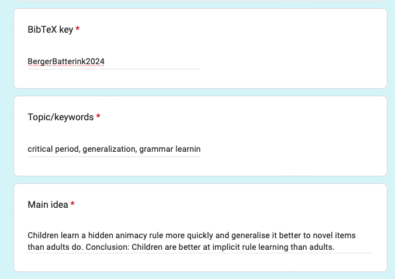
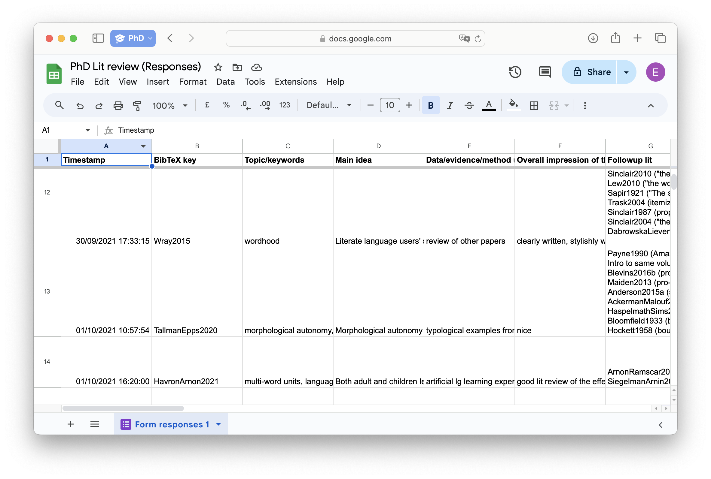

Not a lot of what I did in the first year of my PhD was a great use of time… but I did create a darn good setup for managing my literature that’s paying off years later.
The key idea: use Google Forms to build a synthesis matrix.
The synthesis matrix
Imagine a spreadsheet in which every row is a book or paper you’ve read, and every column is a topic that’s important for your research. If a source says something interesting about a topic, you jot down in that column a quick note or a nice quotation.
Then when the time comes to write a paper about “wordhood cues”, say (yknow, just hypothetically), you can revisit the notes you’ve left in the “wordhood cues” column to see everything folks have said on the topic.
Here’s an excerpt of mine:
| BibTeX Key | Keywords | Main idea | Wordhood cues |
|---|---|---|---|
| DixonAikhenvald2002a (link) | wordhood, typology | Separately define both “grammatical words” and “phonological words” | No single phon. criterion for every language. A few gram. criteria that can work for every language. |
| Haspelmath2011 (link) | wordhood, typology | No criteria for wordhood are reliable cross-linguistically | Discusses applicability of ten (grammatical) criteria |
| Wray2015 (link) | wordhood, literacy | Intuitions about wordhood are based on orthography and on the prototype of word as concrete noun | Word mainly as orthographic unit |
The synthesis matrix quickly became my favourite way to manage my PhD literature.
- It preserves ideas from a paper you’re reading now but may not actually cite for another three years.
- It simplifies writing lit reviews based around ideas (like “Cats are good (Author A, Author B)”) instead of based around authors (“Author A says cats are good. Author B agrees”️).
- It makes collaborating on lit reviews a breeze: your colleague can enter notes from a source they’ve read, and then you’ve got access to the key points too.
The problem: Entering text straight into a spreadsheet can be such a pain.
Enter: Google Forms
With Google Forms (or Microsoft Forms, or probably many others—pick your poison), you can create a “survey” that contains a bunch of text fields, each corresponding to a piece of information that you want to record.

Then once you submit this form, the text you entered in each field will be saved as a new row in a spreadsheet.

If you decide after creating the form that you want to start taking notes on a new topic, then it’s as easy as editing the form to add a new question. A new column will automatically be added into the spreadsheet.
What to record?
For each source, I record:
- BibTeX key
- Topics/keywords
- Main idea
- Data/evidence/method used (e.g., “experiment”, “review paper”, “narrative argumentation”)
- Overall impression (e.g., “has great lit review”, “hard to follow”)
- Followup lit (any papers that are mentioned that I should go read)
- Followup ideas (questions/ideas that this source raises)
Then I also have many optional questions about the different research topics that I’m interested in, for example:
- Wordhood cues
- Rule generalisation
- Emergence of compositional structure
Of course not every source weighs in on every topic. I just take notes under the topics that are relevant.
This literature management method has really helped me, and I hope it can help somebody else out there! Happy synthesising üòä